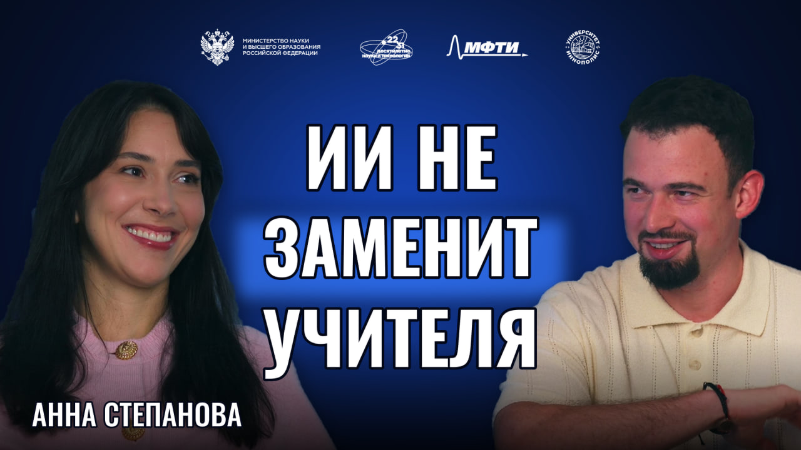

Анна Степанова
Заместитель вице-президента по образовательным проектам VK
«ИИ не заменит учителя»Как сохранить интерес к учёбе, когда технологии меняют школу и университет? Анна Степанова рассказывает об образовательных проектах VK, сотрудничестве с вузами и людях, которые помогают найти свой профессиональный путь.

01О герое
Анна Степанова — руководитель образовательных проектов VK. Развивает VK Education, программы взаимодействия с вузами и профориентационные инициативы для школьников и студентов. Эти проекты помогают знакомиться с IT-профессиями, работать над практическими задачами и выстраивать переход от обучения к карьере в технологиях.
02Ключевые тезисы
- Интерес к образованию у Степановой появился в университете. Уже во время учёбы она начала работать в Институте образования, а затем стала развивать образовательные проекты в компаниях.
- По мнению Степановой, искусственный интеллект может помогать в обучении, а мотивацию и интерес к знаниям по-прежнему формируют преподаватели. Осмысленное применение технологий требует участия человека.
- Партнёрство университетов и бизнеса даёт студентам возможность решать реальные задачи. Степанова рассказывает о кейс-чемпионатах и общении с экспертами-практиками в образовательных проектах VK.
- Знакомство с инженерными объектами помогает увидеть, как устроены технологии. Степанова вспоминает поездки на гидроэлектростанции и рекомендует изучать энергетику Камчатки.
- Студентам Степанова советует задавать вопросы и понимать, для чего они учатся. Найти интерес к своему направлению помогают разговоры с сокурсниками, преподавателями и наставниками.
03Возьми с собой
Что применить
Сформулируйте, что вам хочется понять в своей области. Обсудите этот вопрос с преподавателем или практикующим специалистом и найдите задачу, на которой сможете проверить полученные знания.
В этом выпуске
Искусственный интеллект в образовании, роль учителя, наставничество, партнёрство VK с вузами, олимпиады и научно-популярные путешествия.